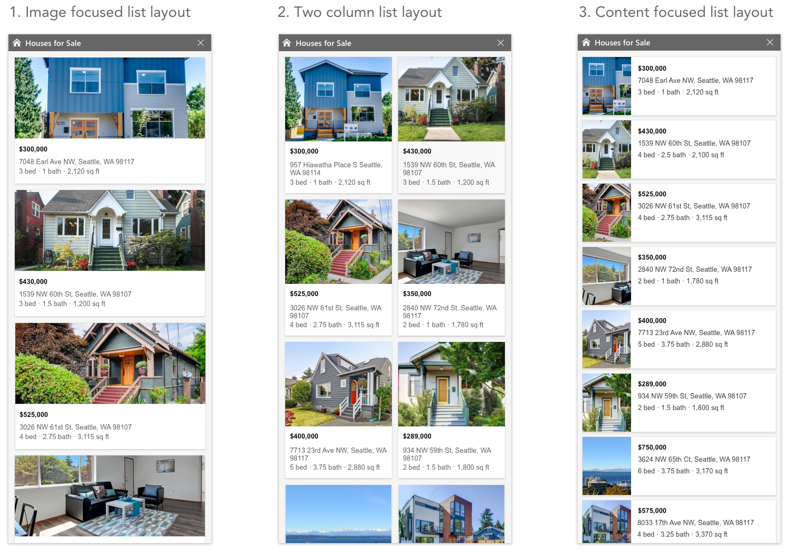

OneMap
Overview
This project came out of a need to unify all of the map experiences on desktop Bing. Various search segments such as hotels or real estate showed their data on map experiences that were all slightly different. This impeded our users’s ability to learn how to interact efficiently since the interactions and map elements were varied between experiences. Unifying all of the map experiences wasn’t an easy feat, however. All segments had different needs and varied ideas of how those needs should be solved. We walked a very fine line between enforcing the framework rules to create a predictable experience for our users and satisfying individual segment’s needs.
Process
After we identified the problem of too many different map canvases, we started talking to the different segments teams to understand their needs for a map framework. One of the success metrics was adoption of the framework by other teams, as a result, a strong collaboration with segment teams was key in this project.Conversations with segment teams revealed a few common needs: prominent and rich filters for list searches, show-me and data viz layers, viewing a list result and a detail card side by side and rich custom detail card modules.
After gaining an understanding of what partners need in their experiences based on their domain knowledge as well as their users studies, we did an audit on our existing Bing maps website. The goal of the audit was to examine which parts and features were key to the user scenarios and which we could clean up.
We then created wireframes in which we defined where elements such as list results and filters live and we highlighted which parts of the map overlay were customized by the segment and which parts are consistent across segments. This process had quite a few iterations and back and forth with segments until a consensus was reached.
In the image below, the content of the areas in red was decided to be owned by segments, given that it falls into pre-defined templates:

The next step was to dive deeper into the design of each
element and create layouts that can scale to different segments.
These included: list results, detail cards, the filters bar, data
viz control, maps task bar and show-me layers.
Here is an example of list layout explorations. Some segments such as hotels search, needed the ability for the user to scan the list fast and compare the hotels to one another. Other categories such as trails, benefited from a larger image— the image was an important decision factor for users. I designed a few various list layouts and worked with a user researcher to identify pros and cons of each layout. Based on the user study results and polar needs, we decided to have two available layouts for segments to use — image focused layout (#1) and a content focused layout (#3).
Here is an example of list layout explorations. Some segments such as hotels search, needed the ability for the user to scan the list fast and compare the hotels to one another. Other categories such as trails, benefited from a larger image— the image was an important decision factor for users. I designed a few various list layouts and worked with a user researcher to identify pros and cons of each layout. Based on the user study results and polar needs, we decided to have two available layouts for segments to use — image focused layout (#1) and a content focused layout (#3).

This framework has been built but continues to evolve as we learn from our users
and find improvements. Here are examples of how a few segments carried out
their designs on the map: